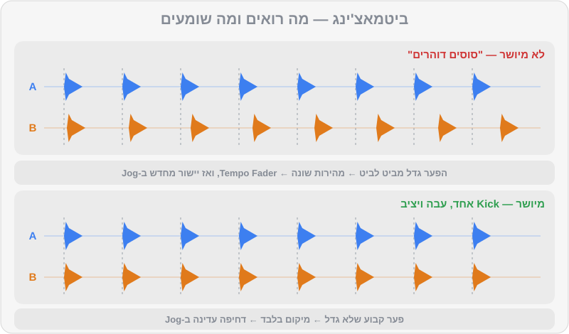

פרק 04 מתוך 20
BPM וביטמאצ'ינג
BPM & Beatmatching
מה זה BPM, איך עובדים ה-Tempo Fader וה-Jog Wheel, ושיטה מסודרת צעד-אחר-צעד ליישור שני שירים באוזן — כולל מתי להשתמש ב-Sync, מתי לא, ולמה Master Tempo חייב להיות דולק.
יש רגע שכל DJ זוכר: אחרי דקות של "סוסים דוהרים" באוזניות — שני תופים שמתנגשים, מקדימים, מאחרים — פתאום הכול נועל. שני ה-Kicks הופכים למכה אחת, עבה ושלמה, וזה פשוט נשאר שם. זה Beatmatching. נכון, ל-Rekordbox יש כפתור Sync שעושה את זה בשבריר שנייה. אז למה ללמוד את זה ביד? כי Sync סומך על ה-Beatgrid, וה-Beatgrid לא תמיד צודק; כי ציוד במועדון לא תמיד מחובר כמו שצריך; וכי האוזן שתתאמנו כאן היא אותה אוזן שתשמע בהמשך מתי מעבר "יושב" ומתי לא. בפרק הזה נבנה את המיומנות הזו בהדרגה, עם קבצי תרגול שנבנו בדיוק בשביל זה.
מה תלמדו בפרק#
- מה זה BPM, אילו קצבים מאפיינים כל ז'אנר, ומה זה "חצי קצב" ו"קצב כפול"
- איך עובד ה-Tempo Fader, מה זה טווח Tempo, ואיך מחשבים אחוזים
- למה Master Tempo (Key Lock) חייב להיות דולק כמעט תמיד
- ההבדל בין מהירות (Tempo) למיקום (Phase), ולמה צריך לתקן את שניהם
- איך משתמשים ב-Jog Wheel לדחיפה עדינה (Pitch Bend)
- שיטת ביטמאצ'ינג באוזן, צעד אחר צעד, וטבלת אבחון "מה אני שומע ומה לעשות"
- כפתור ה-Sync: איך הוא עובד, מתי כן ומתי לא
- סדרת תרגילים הדרגתית עם
practice-02עדpractice-07
מה זה BPM#
הקיצור BPM (Beats Per Minute) פירושו מספר הביטים בדקה. 124 BPM אומר 124 מכות Kick בדקה. ככל שהמספר גבוה יותר, השיר מהיר יותר. כל ז'אנר חי בטווח קצבים אופייני:
| ז'אנר | טווח טיפוסי | דוגמאות מ-DJ Lab |
|---|---|---|
| לו-פיי / דאונטמפו | 70–90 | breadth-10 (84) |
| היפ-הופ | 85–100 | mainstream-05 (92), mainstream-07 (95) |
| רגאטון | 88–100 | mainstream-09 (92), mainstream-08 (95) |
| ים-תיכוני / מזרחית למסיבות | 95–130 (רחב מאוד) | mainstream-13 (100), mainstream-14 (104), mainstream-15 (124) |
| אפרוביטס | 100–115 | mainstream-11 (104), mainstream-12 (106) |
| אמאפיאנו | 110–115 | house-14 (113) |
| נו-דיסקו | 110–122 | house-13 (116), house-12 (118) |
| דיפ-האוס / אפרו-האוס | 118–124 | house-02 (121), house-01 (122), house-09 (122) |
| האוס | 120–126 | house-03, house-04 (124) |
| מלודיק טכנו | 120–126 | techno-05 (122), techno-07 (124) |
| טק-האוס | 124–128 | house-05 (126), house-06 (127), house-07 (128) |
| ביג רום | 126–130 | mainstream-01, mainstream-02 (128) |
| טכנו | 128–140 | techno-04 (129), techno-01 (130), techno-03 (132) |
| טראנס / פסיי-טראנס | 132–148 | breadth-04 (134), breadth-03 (138), breadth-01 (142) |
| הארד טכנו | 145–160 | techno-11 (148), techno-12 (150) |
| דראם אנד בייס | 170–176 | breadth-06 (172), breadth-05 (174) |
חצי קצב וקצב כפול#
שיר ב-140 BPM יכול להרגיש איטי — כמו טראפ או דאבסטפ, שבהם הסנר מגיע רק פעם בתיבה ("Half-time"). ושיר היפ-הופ ב-87 "מתאים" לדראם אנד בייס ב-174, כי 87 × 2 = 174. זה חשוב לשני דברים: Rekordbox לפעמים מזהה BPM כפול או חצי (פרק 2), ובהמשך, במעברי ז'אנר, אפשר לנצל את היחס הזה (פרק 15).
ה-Tempo Fader#
הפיידר הארוך בצד של כל דק משנה את מהירות השיר. הוא מראה אחוזים מהמהירות המקורית:
ה-BPM החדש = ה-BPM המקורי × (1 + אחוז ÷ 100)
האחוז הדרוש = (BPM היעד ÷ BPM המקורי − 1) × 100
| מ... | ל... | שינוי |
|---|---|---|
| 124 | 126 | +1.61% |
| 128 | 124 | −3.13% |
| 120 | 124 | +3.33% |
| 125.5 | 124 | −1.20% |
| 122.7 | 124 | +1.06% |
| 95 | 124 | +30.5% — יותר מדי! כאן צריך טכניקת מעבר אחרת (פרק 15) |
טווח ה-Tempo#
אורך הפיידר קבוע, אבל אפשר לקבוע כמה אחוזים הוא מכסה: ±6%, ±10%, ±16% או WIDE (טווח רחב מאוד). ככל שהטווח צר יותר, כל מילימטר של תזוזה משנה פחות — כלומר שליטה עדינה ומדויקת יותר.
| טווח | לשיר של 124 BPM | מתי |
|---|---|---|
| ±6% | 116.6–131.4 | תרגול דיוק, סטים בתוך ז'אנר אחד |
| ±10% | 111.6–136.4 | ברירת מחדל טובה לרוב הסטים |
| ±16% | 104.2–143.8 | מעברי ז'אנר גדולים |
| WIDE | כמעט כל דבר | אפקטים ותעלולים, לא לביטמאצ'ינג |
נעילת סולם: Master Tempo (Key Lock)#
כשמאיצים תקליט ויניל, הקול גם עולה בגובה — כמו "צ'יפמאנקס". שינוי של כ-6% במהירות מזיז את הצליל בערך בחצי טון (Semitone). Master Tempo (נקרא גם Key Lock) שומר על הגובה המקורי גם כשמשנים מהירות.
- השאירו אותו דולק כמעט תמיד. אחרת הסולם משתנה, ומיקס הרמוני (פרק 10) מפסיק לעבוד.
- בשינויים גדולים (מעל 6–8%), Master Tempo מתחיל לייצר "ארטיפקטים" — צליל קצת מתכתי או מרוח. זה סימן שהשירים רחוקים מדי בקצב.
שתי בעיות: מהירות ומיקום#
זה הרעיון הכי חשוב בפרק. כשמנסים ליישר שני שירים, יש שתי בעיות נפרדות:
- מהירות (Tempo) — האם שני השירים רצים באותו BPM? אם לא, הם יתרחקו אחד מהשני עם הזמן. מתקנים עם ה-Tempo Fader.
- מיקום (Phase) — גם אם המהירות זהה, האם ה-Kicks נופלים באותו רגע? אולי B מתחיל רבע ביט מוקדם מדי. מתקנים עם ה-Jog Wheel.
המשל: שני רצים על מסלול. ה-Tempo Fader קובע את המהירות של כל אחד. ה-Jog Wheel הוא "דחיפה קטנה בגב" או "משיכה בחולצה" — שינוי זמני, שמזיז את הרץ קדימה או אחורה בלי לשנות את המהירות הקבועה שלו.

כמה מדויק צריך להיות?#
כאן מגיעה הפתעה: הפרש של 1 BPM בלבד גורם לשירים להתרחק בביט שלם כל דקה. ב-124 BPM ביט אחד הוא כמעט חצי שנייה (484 אלפיות). אפילו הפרש של 0.1 BPM יוצר סטייה של כ-48 אלפיות שנייה בדקה — והאוזן מתחילה לשמוע "כפל" ב-Kick כבר בסביבות 15–20 אלפיות. לכן ביטמאצ'ינג ידני הוא לא "פעם אחת וסיימנו": גם אחרי שהמהירות כמעט מושלמת, נוגעים ב-Jog מדי פעם כדי להחזיק את הנעילה.
ה-Jog Wheel#
לגלגל הגדול יש שני אזורים:
- המשטח העליון — כשמצב Vinyl פועל, נגיעה בו "תופסת" את התקליט: עוצרת אותו או מאפשרת סקרץ'. לא נוגעים בו בזמן ביטמאצ'ינג של שיר שמתנגן.
- הטבעת בצד — סיבוב בכיוון השעון מאיץ לרגע (דוחף קדימה), נגד כיוון השעון מאט לרגע (מושך אחורה). זה ה-Pitch Bend, הכלי לתיקון מיקום.
שיטת הביטמאצ'ינג — צעד אחר צעד#
הסטאפ: בדק 1 (A) מתנגן שיר דרך ה-Master. בדק 2 (B) טעון השיר החדש. האוזניות על הראש, כפתור ה-CUE של ערוץ 2 דולק, והפיידר של B למטה (הקהל לא שומע אותו).
- כסו את מסך ה-BPM של B (פתק דביק על המסך, ממש). אנחנו מאמנים אוזניים.
- מצאו את ה-1 של B. ב-DJ Lab זה פשוט — Hot Cue A. בשירים אחרים: ה-Kick הראשון של פרייז.
- ספרו את A בקול או בראש: "1-2-3-4, 2-2-3-4…".
- שחררו את B על ה-1 של פרייז ב-A (לחיצה על PLAY בדיוק על ה-Kick).
- הקשיבו לשניהם יחד. אפשרות אחת: אוזנייה אחת על B, אוזן שנייה פתוחה ל-A ברמקולים. אפשרות שנייה: ידית ה-Headphones Mix באמצע, ושני השירים באוזניות (פרק 8).
- תקנו מיקום. אם ה-Kicks לא נופלים יחד — דחיפה קטנה ב-Jog של B. לא בטוחים לאיזה כיוון? ראו "דחיפת בדיקה" בהמשך.
- בדקו סחיפה. אחרי שיישרתם, אל תיגעו כמה שניות. B מתחיל "לברוח קדימה"? הוא מהיר מדי — הזיזו את ה-Tempo Fader של B מעט לכיוון האטה (−). B "נגרר אחורה"? איטי מדי — הזיזו מעט לכיוון האצה (+).
- אחרי כל הזזת פיידר — ישרו שוב עם ה-Jog. הפיידר תיקן מהירות, אבל בינתיים המיקום כבר זז.
- חזרו על 7–8 בתנועות שהולכות וקטנות, עד ש-B נשאר נעול 16 תיבות בלי לגעת.
- עכשיו הציצו. הורידו את הפתק. B אמור להראות BPM קרוב מאוד ל-A (למשל 124.0 מול 124.0 או 124.1).
- סבב שני: חזרו ל-Hot Cue A של B ושחררו אותו שוב על ה-1 הבא של פרייז. המהירות כבר נכונה — רק מיקום. כך מתרגלים את ה"שחרור על ה-1".
דחיפת בדיקה — הטריק למי שלא שומע מי מקדים#
בהתחלה קשה לשמוע מי מהשניים "ראשון". הפתרון: דחפו את B קצת קדימה.
- נהיה יותר גרוע? B כבר היה לפני A. דחפו אותו פעמיים אחורה.
- נהיה יותר טוב? B היה מאחור. המשיכו בדחיפות קטנות קדימה.
זה לוקח שנייה, ותוך שבוע תתחילו לשמוע את הכיוון בלי לבדוק.
מה אני שומע — ומה לעשות#
| מה שומעים | מה זה אומר | מה עושים |
|---|---|---|
| "כפל" קבוע ב-Kick (פלאם) שלא משתנה | המהירות נכונה, המיקום לא | Jog בלבד |
| "כפל" שהולך וגדל לאט | מהירות כמעט נכונה | תזוזה זעירה ב-Fader, ואז Jog |
| "סוסים דוהרים" — בלגן שמשתנה מהר | פער מהירות גדול | תזוזה משמעותית ב-Fader לכיוון הנכון |
| הקלאפים "נמרחים", ה-Kicks נשמעים כמעט יחד | מיקום כמעט נכון | נגיעה קטנטנה ב-Jog |
| Kick אחד, עבה ויציב, שנשאר כך 16 תיבות | נעול! 🎉 | להנות, ולהקשיב כל כמה שניות |
| הכול נשמע נכון, אבל השינויים בשירים לא נופלים יחד | ביטים מיושרים, פרייזים לא | התחילו את B מחדש על ה-1 של פרייז (פרק 3) |
עזרים חזותיים — בזהירות#
התוכנה מציגה את שני הווייבפורמים אחד מעל השני, ואפשר לראות אם ה-Kicks (הפסים הגבוהים) מיושרים. יש גם תצוגות כמו Phase Meter (אם היא מופעלת אצלכם בתצוגה) שמראות אם ה-1 של שני הדקים מיושר. זה עוזר — אבל:
- העיניים משקרות כשה-Beatgrid לא נכון. בטראק עם מתופף חי, הווייבפורם יכול להיראות מיושר כשהאוזן שומעת אחרת.
- במועדון, המסך רחוק והאור חלש. האוזן תמיד איתכם.
השתמשו בעיניים כדי לבדוק את עצמכם אחרי שהאוזן החליטה, לא במקומה.
כפתור ה-Sync — מתי כן ומתי לא#
איך הוא עובד#
ה-Sync עובד יחד עם Quantize: כש-Quantize דולק, Hot Cues, לופים ו-Beat Jump "נצמדים" לקווי הרשת, כך שקפיצה באמצע שיר לא תוציא אותו מהקצב.
מתי Sync הוא חבר#
- כשה-Beatgrid בדוק ונכון (כמו בכל הטראקים של DJ Lab, ובספרייה שהכנתם כמו בפרק 2).
- כשאתם רוצים לפנות קשב ליצירתיות: אפקטים, לופים, Hot Cues, ארבעה דקים.
- בתרגילי פרייזים וספירה (כמו בפרק 3), כשהמטרה היא לא הביטמאצ'ינג.
- בהופעה לחוצה, כגיבוי — אחרי שאתם יודעים לעשות את זה ביד.
מתי Sync הוא אויב#
- רשת (Beatgrid) שגויה — Sync יסנכרן "בביטחון מלא" לרשת הלא נכונה, והתוצאה תהיה התנגשות.
- הקלטות עם קצב משתנה — הרבה מזרחית, פופ ישראלי ישן, פאנק, דיסקו. גם עם ניתוח Dynamic, צריך אוזן ששומרת.
- כשאתם עדיין לומדים — אם תתחילו עם Sync, לא תפתחו את האוזן. התחייבו לשבועיים-שלושה בלי Sync בכלל.
תרגילים#
סדר התרגילים כאן חשוב: כל אחד מוסיף רק קושי אחד. אל תדלגו.
סיכום#
- הקיצור BPM = ביטים לדקה. לכל ז'אנר טווח משלו; שימו לב לחצי קצב וקצב כפול.
- ה-Tempo Fader משנה מהירות באחוזים. טווח צר = דיוק. בציוד Pioneer, למטה = מהר יותר.
- את Master Tempo משאירים דולק כמעט תמיד, כדי שהסולם לא ישתנה.
- ביטמאצ'ינג = שתי בעיות: מהירות (Fader) ומיקום (Jog). אחרי כל תיקון מהירות — מיישרים מיקום מחדש.
- לא בטוחים מי מקדים? דחיפת בדיקה קדימה: גרוע יותר = B היה לפני.
- ה-Sync מצוין כשה-Grid נכון, מסוכן כשהוא לא. ספירת פרייזים תמיד עליכם.
בפרק הבא#
שני שירים רצים יחד — אבל אם פשוט נעלה את שני הפיידרים, נקבל בוץ: שני באסים, עוצמה שעולה לאדום, ומערכת שצועקת. בפרק הבא נלמד לשלוט במיקסר: Gain, מטרים, EQ ופילטר.